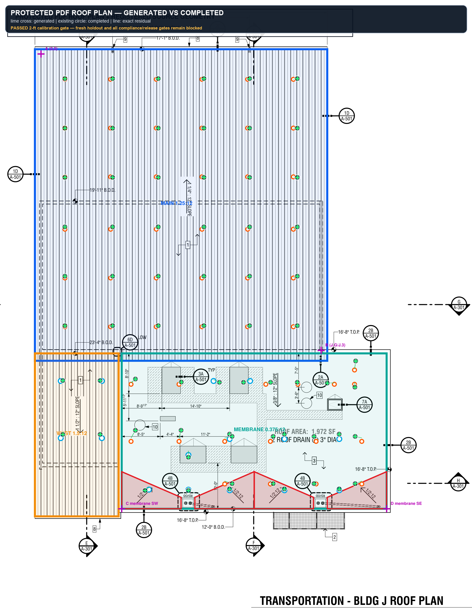
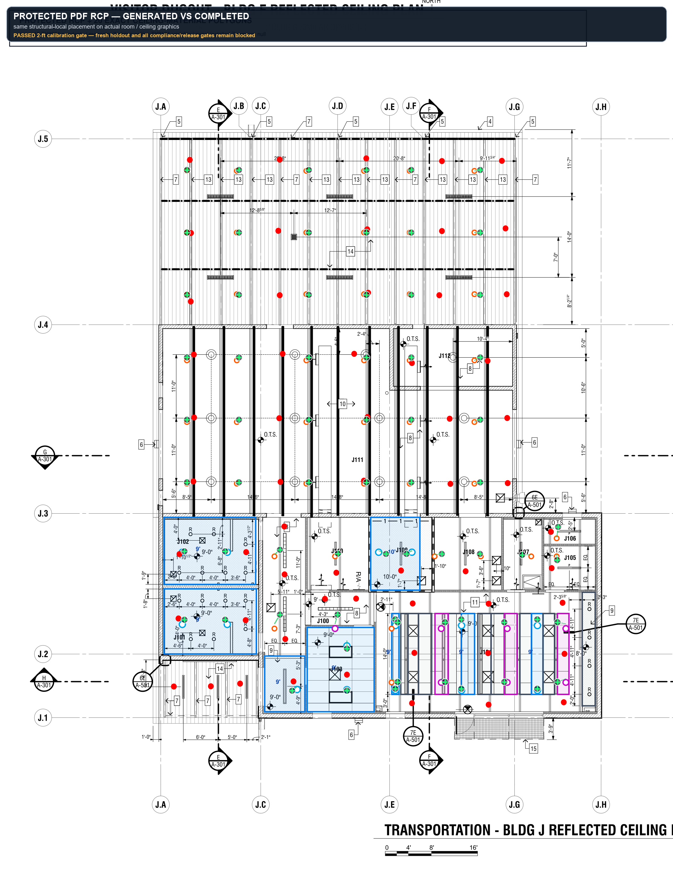
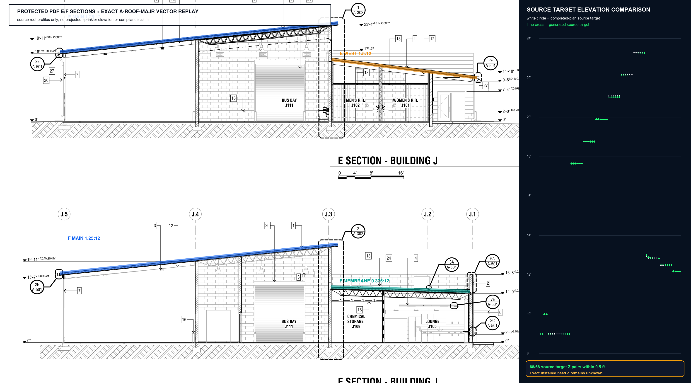
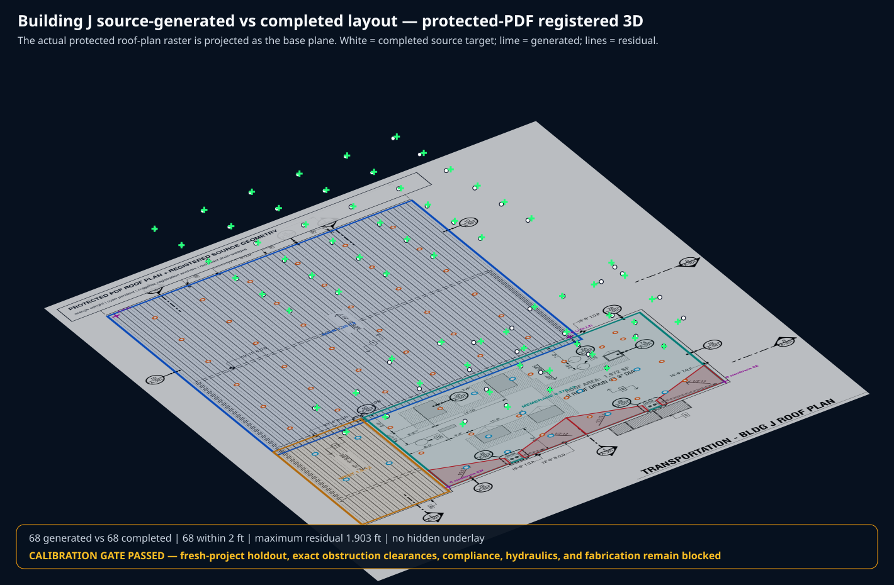

MIT Riverside Building J — topology-aware source placement proof
Actual protected architectural PDF underlay + sealed source-only generated candidate + immutable completed-bid answer.
CALIBRATION GATE PASSED — Count, kind, and 2-foot XY calibration passed. Fresh-project holdout, obstruction clearance, compliance, hydraulics, fabrication, and release remain blocked.
68 / 68generated / completed
68matched within 2 ft
0.711 ftmean XY residual
1.903 ftmaximum XY residual
68 / 68target Z within 0.5 ft




Candidate receipt: f63cd9821f118ec1b3e94cac9cf74eabb8a690be90e33c50558bf8c94b083985
Score receipt: b5a34e857f70240358a77c08926008acc14b678cec3e94ac3c2e96a6aaa5eca6